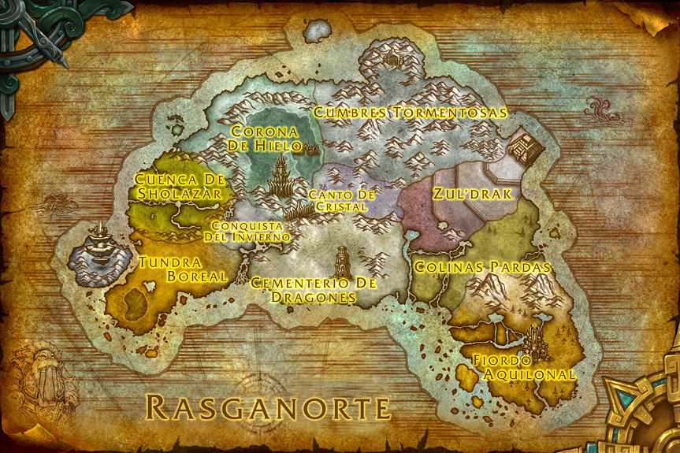
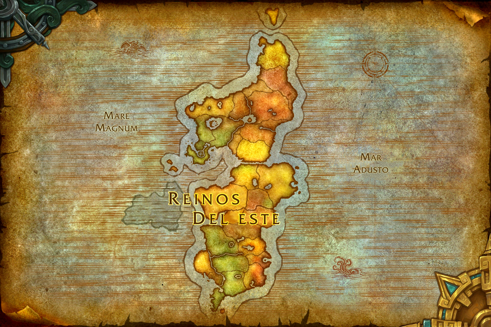

WARCRAFT
III

El Principe De La Luz Y De La Oscuridad
La historia de Arthas Menethil, Principe de
Lordaeron y Paladín de la Mano de Plata. Esta
historia
se centra en como Arthas es
consumido por la venganza y la ira que lo
conducen hacia la oscuridad,
convirtiendose en el
Caballero De La Muerte del Rey Exanime.